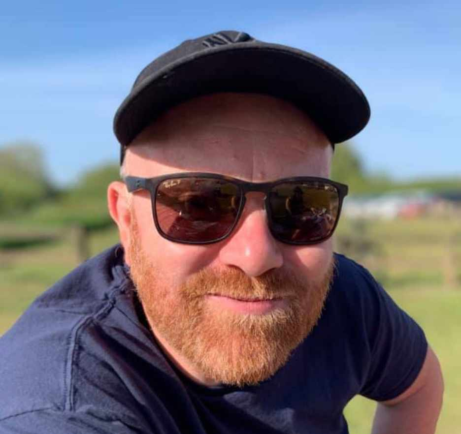

What I do
I work together with clients and (agile) development teams to create the best possible digital experiences for their users.

Mobile & web UX
Understanding users and translating insights into exceptional digital products and services.

Rapid prototyping
Creating interactive front-end models to help explore and validate design approaches.

Wireframing & specification
Communicating design solutions through clear schematics and detailed functional descriptions.

Visual UI design
Designing clean, clear visual interfaces, design systems and meaningful animations that enhance the UX.
Selected work
My portfolio embraces web, mobile apps and visual UI design. To respect client privacy, the following is only a selection of projects. I would be delighted to meet in person and present a wider selection of recent work.
Tools
I have mastered several tools that play a role in defining and communicating the user-experience. Based on the project and team, I am able to adapt my process and choose the best tools for the job.
Figma
I have extensive experience using Figma for visual interface design and setting up and maintaining design systems.
Sketch
As an early adopter of Sketch I have used it extensively on a range of projects from mobile apps to complete design systems.
Axure RP
I am familiar with many prototyping tools, and Axure has a nice balance of power and speed which are essential for getting early feedback on designs.
HTML & CSS
An understanding of modern front-end helps me create feasible designs and collaborate with developers. I will often code specific behaviours such as responsive scaling.
Recommendations
These are some recommendations from colleagues and clients via LinkedIn. Formal references can be provided on request.
Any team would be lucky to have a Senior UX Designer such as Patrick. He’s brought a wealth of knowledge and experience into the company. As his manager, I can tell that he is very dedicated and passionate about his work. As a designer he’s very organized and thorough. Patrick’s passion has helped the company to improve the product and design processes using best practice.
 Tony Phan,
Tony Phan,former manager
Not only is he immensely talented as a UI/Interaction Designer, Patrick is also a great professional and team player. He can place himself in users’ shoes and through a methodical process deliver innovative solutions - which turn into products users love. Patrick also helped me organise and structure the project efficiently: he selected the appropriate design tools, implemented design workflows and mentored Junior Designers.Mathias Peterschmitt,
Product Owner
Patrick is a top-notch product designer. His skills in design, prototyping and his thoughtful approach results in fantastic products. He empathizes with users and creates problem-solving interfaces. Most importantly, Patrick is an excellent friend, mentor and a great inspiration to me. If I need to describe Patrick in one word: he’s SOLID.
 Navneet Ratheen,
Navneet Ratheen, former colleague
Patrick is a senior interaction designer with a great feeling for detail, visual design and human-scale interaction. Patrick always knows about cutting edge applications to help his workflow and his team-workflow. Patrick is also involved in informing his colleagues about these applications.Hayo Wagenaar,
former manager
Patrick has the quality to think very user-centralised and has a nice graphical design 'signature' throughout all his work. He has the ability to understand and adapt to new technologies quickly and is also critical in what technique works best to the get the best result. Open minded, nice to discuss work-related challenges with and thorough in evaluating work, with good, to the point and secure feedback. Nice person to work with!
 Sitan van Sluis,
Sitan van Sluis, former colleague
Patrick translated the proposition excellently into an effective interactive concept for our target students. He is open to difficult questions and knows how to translate that into improvements of the concept. The world needs more interaction designers like Patrick, who are able to translate strategy into effective and distinctive artwork. Great work, great results!
 Jasper van Zanten,
Jasper van Zanten, client
Patrick worked for me as an interactive producer whilst at Chellomedia. He had a strong design background and was quick to pick up ideas and run with them. His work covered both creative and technical projects which he dealt with equally well. I would highly recommend him for work in the new media space.John Denton,
former manager
Patrick is a talented Producer who has a professional and enthusiastic approach. He has a can-do attitude and is comfortable working to tight deadlines. I am happy to recommend him.
 Jo Parkinson,
Jo Parkinson, former colleague
Although I didn’t manage Patrick directly, as a small group I regularly had the pleasure of working closely with him on several creative projects. He is a multi-talented individual, who focuses 100% on delivering excellence in everything he produces. He will be sorely missed.Dean Stockton,
former colleague
Patrick has been very creative and extremely efficient when we created and when we put EuroNews' Interactive TV service up to date. His work was very professional and he showed a deep and detailed knowledge - and furthermore he is fun to work with!Peter Schmitz,
client
Patrick always provided an excellent common sense view of the problems we were trying to solve or the features we were trying to make. Patrick makes excellent storyboards, which greatly help in the technical design process. While he can visualise a great product, he can also tackle technically complex ideas and tools. It was a pleasure to work with him.
 Simon Elliot,
Simon Elliot, former colleague
I worked with Patrick on a number of award winning interactive applications including Sport1 Interactive. Patrick has always been easy to work with and willing to go the extra mile to get things completed on time.Charles Dawes,
former colleague
Patrick is a highly capable and reliable Producer. In my experience, customers endorsed the quality and timeliness of his work, supported by a great attitude. I could always trust Patrick with clients to see jobs through to completion and build good relationships. Moreover, Patrick is the ultimate team player and a thoroughly nice bloke!Neil Meadows,
former colleague
Patrick is a very talented designer that was responsible for our interactive TV user interfaces. He has an impressive knowledge of usability and understanding of how viewers engage with interactive services.Paul Tarplee,
former manager
Patrick was conscientious, diligent and very talented graphic and interactive designer, working with multiple technologies in what was, at times, a pressurised environment. Patrick was a key member of the founding team at Multimedia Television and was instrumental on some our pioneering projectsSimon Hall,
former manager
Clients
I work with clients from a range of sectors, from creative agencies to corporations, growing start-ups to well known brands. The best results come from working with a team that recognises the value of design and is able to balance the needs of the business and its users.
Contact
It would be great to hear from you and discuss whether I can be a good match for your team and projects.

Hand-crafted using HTML 5 & CSS 3 © 2021